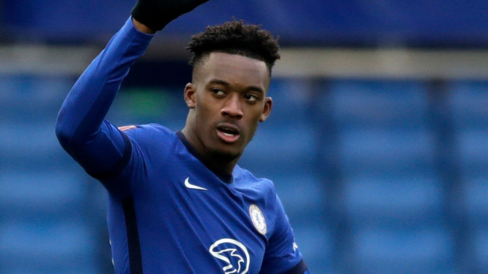

2000년생 전후 나이대의 제법 많은 이른바 "첼시 유스 황금세대" 중에서도 가장 뛰어난 재능을 갖고 있다고 평가받는다.당장 역대 첼시 아카데미 출신 선수들 중 성인 팀 데뷔 후 리저브 팀/임대 생활을 거치지 않고 한번에 1군에 정착한 선수는 캘럼 허드슨 오도이가 유일무이하다.현재 첼시 1군에서 주전급 멤버로 활약하고 있는 캘럼을 제외한 모든 유스 출신 선수들 및 지금도 임대 생활 중인 선수들은 수년의 임대 생활이나 리저브팀 생활을 보낸 후에 첼시 성인팀에서 프로 데뷔를 했거나 혹은 데뷔 후 주전 경쟁에서 밀려 이후 PL내 하위권 팀,해외 리그 팀으로 임대 생활을 보냈다. 허나 캘럼 허드슨오도이는 그런것 없이 "만 17살"에 첼시 성인팀에 데뷔하고 한번에 준주전급 내지는 로테이션급 이상으로 자리를 잡았다. 그리고 현재는 주전급을 넘어서 팀 핵심 멤버로 활약중에 있다. 19-20시즌에 첼시에서 활약을 하고 있는 유스 출신 선수들 중에서 가장 어린데 메이슨 마운트에 의하면 유스 시절에 실력이 워낙에 뛰어나서 계속 월반을 하여 자기보다 나이 많은 형들하고 같이 뛰었다고 한다. 첼시의 기대받는 유망주 3명인 허드슨오도이와 타미 에이브러햄(아브라함), 오도이의 오, 아브라함의 함, 마운트의 마를 따 오함마 라인으로도 불리고 있다.
